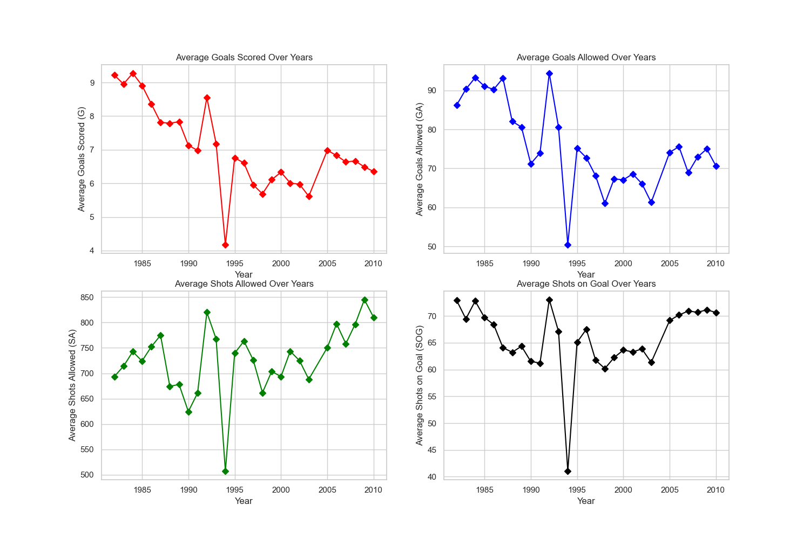
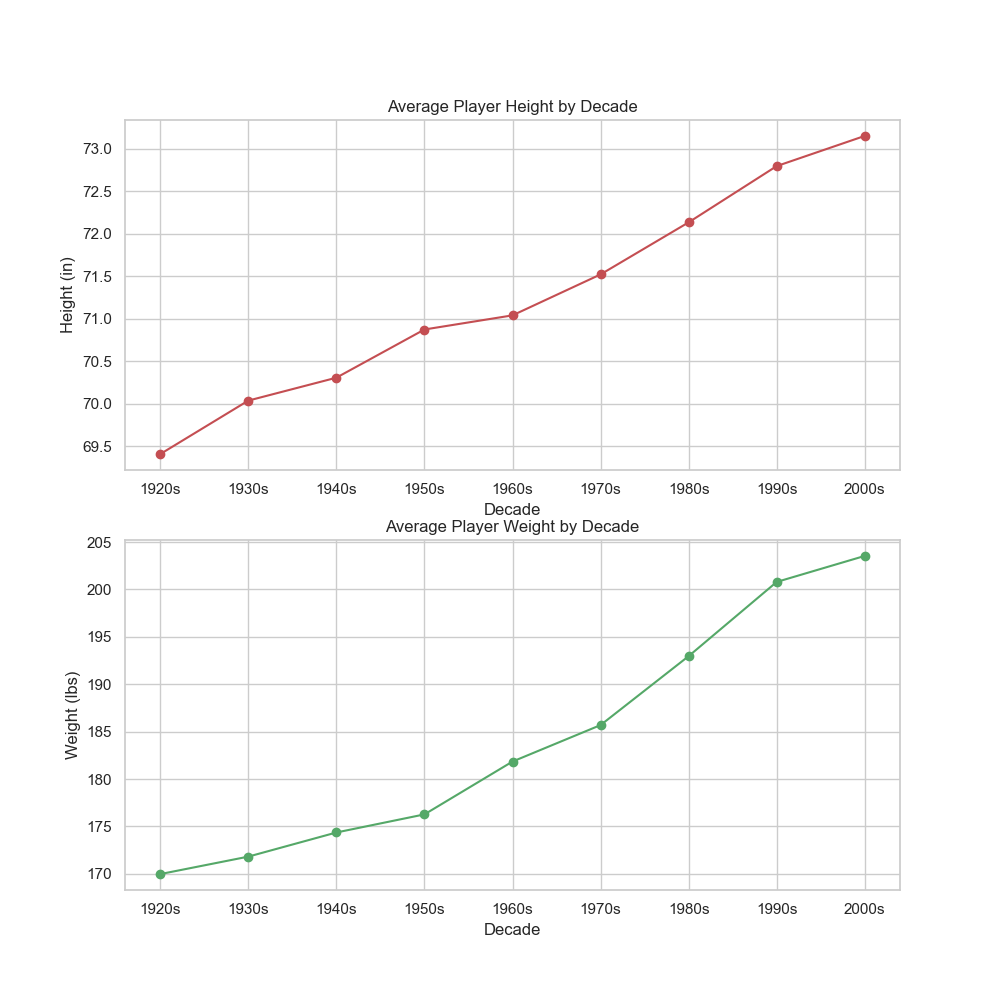
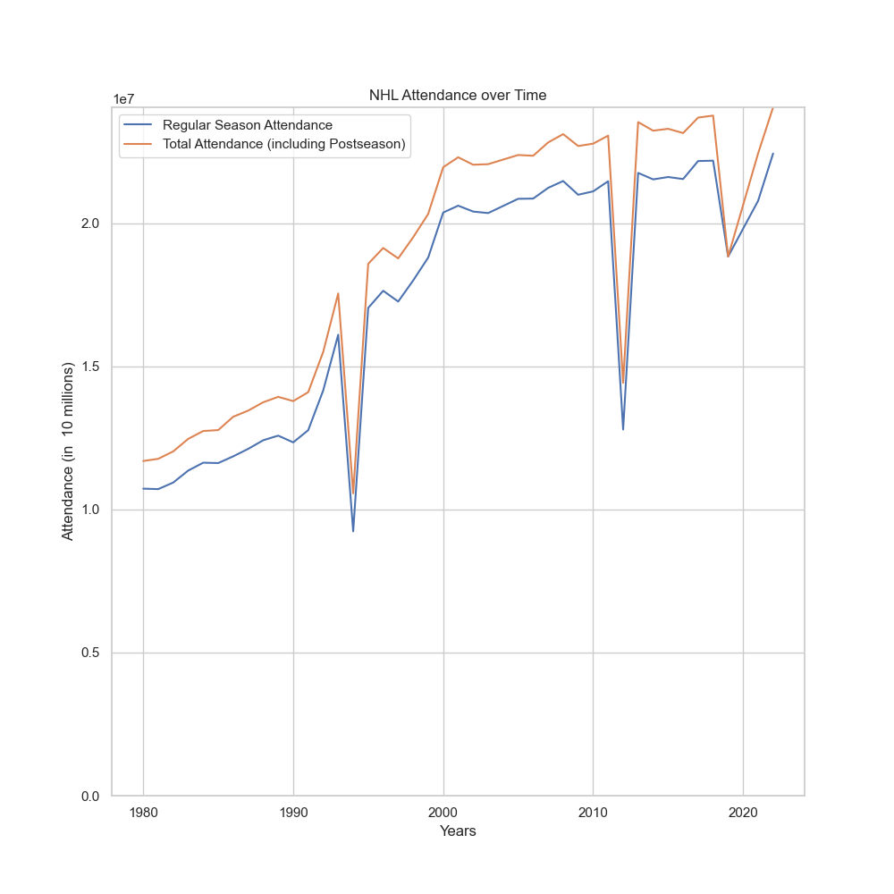
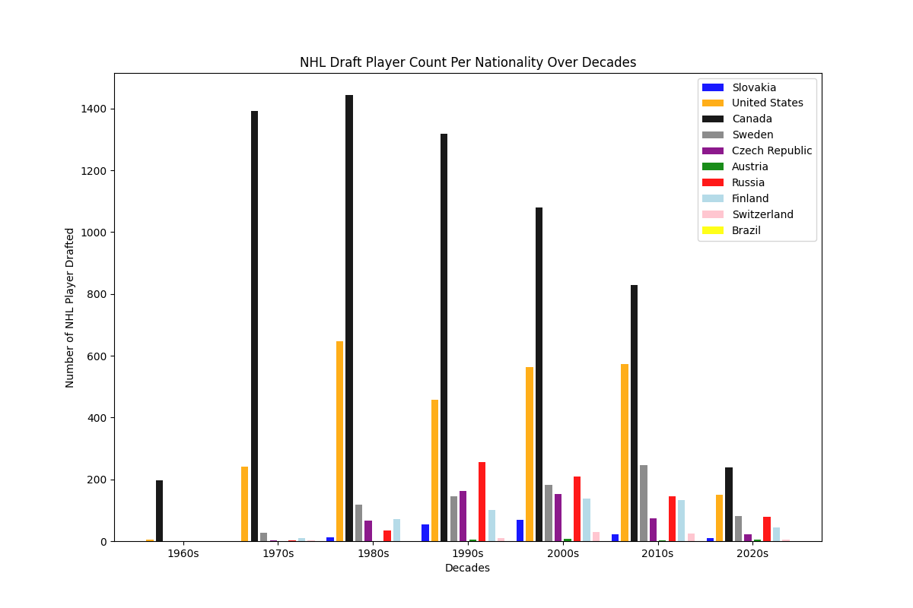

Team Performance:
Has team performance changed over time?
The distribution of team results tightens between the 1970’s to 2011, which we believe shows that the league’s
competitive balance improved despite adding roughly 15 franchises over that time. Implementations such as salary
cap restrictions, draft structure and an increase in player quality and development helped to achieve these r
esults. In general, a more balanced league provides greater entertainment value, as more teams have realistic
chances of qualifying for the playoffs.
Has goal scoring evolved over time?
A steady increase in goals scored per game was observed from the 1950’s to the 1980’s. Subsequently, a decrease in goals per game is observed over the following 15 years (1980’s to 2000).
We believe this can be attributed to a variety of factors, including a renewed defensive emphasis (in coaching, player development, tactics, etc.) to counteract NHL offenses and also a major rule change related to offsides (preventing players from remaining in the offside zone)
Player Statistics:

How have individual player statistics evolved over time?
The average goals scored (by player) and the average goals allowed (by goalie) decreased between the 1980’s to 2011.
This matches up with the team-specific data above, where there was a noted decrease in goal scoring. Meanwhile, the
average shots allowed increased and the average shots on goal fluctuated but remained about the same from the 1980’s to 2011.
With more total shots but the same amount of shots on goal, that is a clear sign in defensive improvement of teams limiting the
“quality” of shots that opponents take.
Has goal scoring evolved over time?
A steady increase in goals scored per game was observed from the 1950’s to the 1980’s. Subsequently, a decrease in goals per game is observed over the following 15 years (1980’s to 2000).
We believe this can be attributed to a variety of factors, including a renewed defensive emphasis (in coaching, player development, tactics, etc.) to counteract NHL offenses and also a major rule change related to offsides (preventing players from remaining in the offside zone)
Player Measurables:

How have player measurables evolved over time?
There has been a consistent rise in attributes such as height and weight. While this should be considered along with a general trend among the human
population, this also provides evidence of the league’s emphasis on acquiring larger, stronger, faster and more athletic players.
NHL Attendance:

How has NHL fan attendance evolved over time?
Game attendance has consistently risen since the inception of the league. Specifically within the last 40 years, the in-person popularity has doubled.
While some of this increase can be attributed to additional teams in the league and larger arenas, an increase of this caliber is clearly a trend.
The three sharp spikes in the attendance data can be attributed to certain external factors. In 1994 and 2012, the league experienced player lockouts, which
limited or virtually eliminated the entire season. In 2020, the NHL season was cut short and the playoffs were eliminated due to the COVID-19 pandemic.
NHL Draft:
